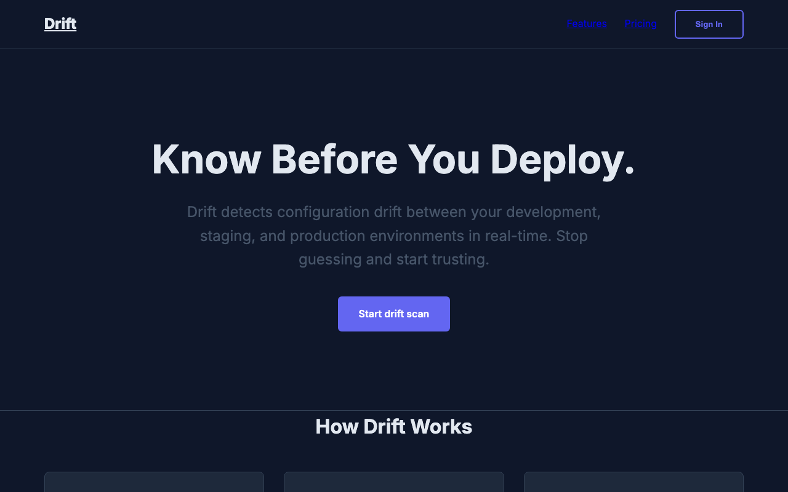
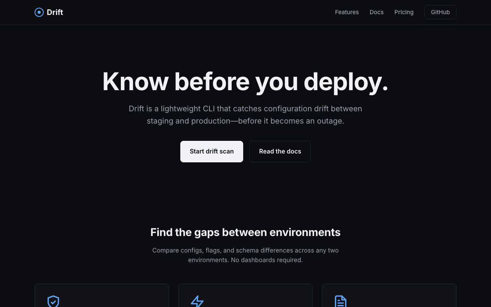

Gemma 4
Ollama · gemma4:latest
- Duration
- 66.0s
- Tokens
- 242 → 4.3k
- Cost
- —
- Status
- success

website-generation
Generate a complete single-file HTML landing page for a fictional developer tool. Same prompt, different models — compare structure, design, and code quality.
Create a complete, production-quality single-file HTML page for a fictional developer tool called **Drift**. ## Product Drift is a CLI that detects configuration drift between environments (staging vs production). Tagline: "Know before you deploy." ## Requirements 1. Output **only** a single fenced `html` code block containing the full page. No explanation outside the code block. 2. The HTML must be self-contained: embedded CSS only, no external dependencies except Google Fonts (Inter or similar). 3. Include these sections: navigation, hero with CTA, three feature cards, a code example block, testimonials (2), pricing (free + pro), footer. 4. Dark theme. Minimal, elegant, content-first. No gradients, glass effects, or heavy animation. 5. Semantic HTML5. Accessible contrast. Responsive layout. 6. The hero CTA button text must be "Start drift scan". 7. Use realistic but fictional copy — do not reference real companies. The page should feel like a polished indie developer tool, not a generic AI template.
Ollama · gemma4:latest

Ollama Cloud · kimi-k2.7-code
